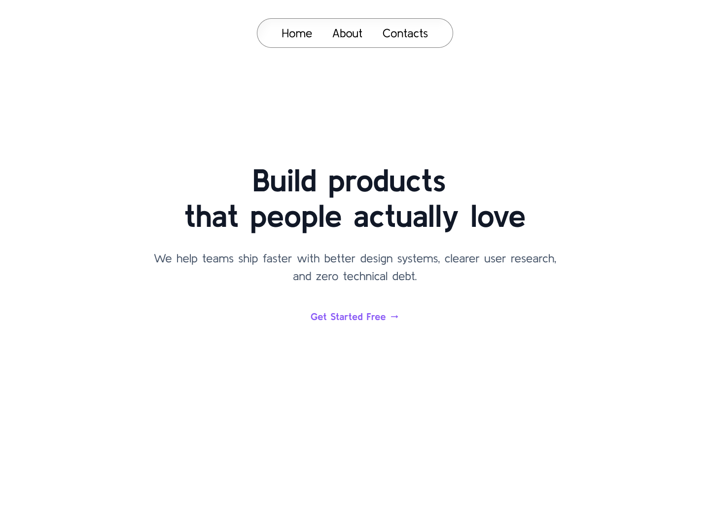
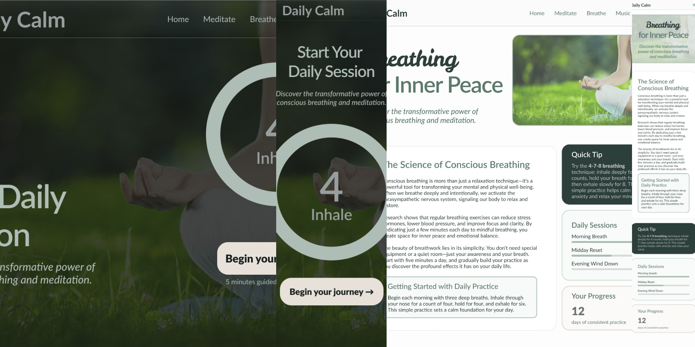

01
Aura Finance: A Visual Savings Experience
Designed a premium mobile savings app that redefines the personal finance experience through atmospheric UI and emotional feedback.


Crafting clear, intuitive interfaces built with structure and purpose.


Hi, I'm Richard – a UI/UX designer with a background in Computer Engineering Technology. While studying programming, I realized I was more drawn to designing interfaces than just making code work. I naturally focused on structure, layout, and visual clarity – even before I knew it was called UI/UX. During my OJT in 2025, that interest became a commitment. I redesigned systems in Figma, recreated landing pages, and constantly refined my skills outside of school. Now, as a Designer OJT in a startup, I contribute to real projects and MVPs, applying structured thinking and intentional design to every interface I touch.
My approach is simple: understand the problem, break it down, structure it clearly, and design with empathy. I focus on clarity first, then refine the visuals to support usability – not distract from it. I specialize in creating thoughtful, structured interfaces that balance usability and visual clarity, turning complex ideas into experiences that feel intuitive and intentional.
When I’m not in Figma, you can find me dancing, traveling, or spending time with animals. I believe the empathy required to care for life—human or otherwise—is the same empathy required to build products that truly serve people. I am currently open to full-time opportunities or freelance collaborations where I can contribute to teams that value thoughtful, purposeful design.
Designed a premium mobile savings app that redefines the personal finance experience through atmospheric UI and emotional feedback.
Designed the admin-side interface of a QR-based attendance system that replaces manual paper time tracking.

Designed the voucher, promo, and offer card experience for a ride-hailing application.

Designed the “Apply as Driver” page for a transportation platform, focusing on simplifying the application process.

Focused design exercises from OJT training - exploring color theory, typography, accessibility, layout, and more.

Designed a login screen using a split complementary color scheme, focusing on color harmony, contrast, and typography hierarchy. Following feedback on clarity and sizing, the design was revised to achieve a perfect final score. The glassmorphism approach, featuring background blur, transparency, and a structured logo, defined the visual composition.

Created a homepage hero section solely utilizing typography, focusing on hierarchy, emphasis, and visual balance with one typeface in various weights and sizes. The design featured an H1 headline, supporting subtext, and a primary CTA button, all text-based. The design was approved on the first submission without any revisions.
.png)
Redesigned a UI screen with poor color choices to enhance accessibility, specifically for users with color-vision deficiencies. This included avoiding red/green conflicts, adding icons and text labels, and using an analogous color palette while preserving brand colors. The redesign achieved a perfect score of 100/100 on the initial submission.

Established a design direction for a nature-inspired meditation app featuring a monochromatic green color scheme. Deliverables included a Canva mood board, color palette, typography board with Lato as the primary typeface, and a Figma mockup of UI components. The overall aesthetic was peaceful and zen, receiving a perfect score of 100/100.

Organized the Settings section of InboxPro using information architecture principles like findability, user-centered design, and accessibility, categorizing it into five areas: Account Profile, Security & Privacy, Notifications, General Preferences, and About App. The structure included tabs, cards, and accordions, with multiple screens for each tab and distinct Light and Dark Mode visual identities, achieving a perfect score of 100/100 in design.

Selected a design with significant flaws, auditing three screens against UI/UX principles. Documented violations and delivered a high-fidelity redesign with justifications. Key improvements: dark mode surface treatment (dark blue), transparent login card elements, and a harmonious color palette. Scored 100/100.
.png)
Designed a full-length single-page website dashboard utilizing a 12-column grid system with consistent gutters. Delivered high-fidelity mockups for both Desktop and Mobile, showcasing responsive design. The design followed principles and feedback from previous OJT sessions, receiving commendation for grid alignment and mobile hero section adaptation.

Four screens were designed utilizing F-pattern layouts for the first set and Z-pattern for the second. Both sets followed the mood board theme, incorporating established color, typography, and grid systems. The F-pattern was accepted on the initial submission, while the Z-pattern needed one revision for standard alignment, which was successfully achieved.
Open to UI/UX design opportunities, freelance projects, and design collaborations. Let's build something meaningful together.